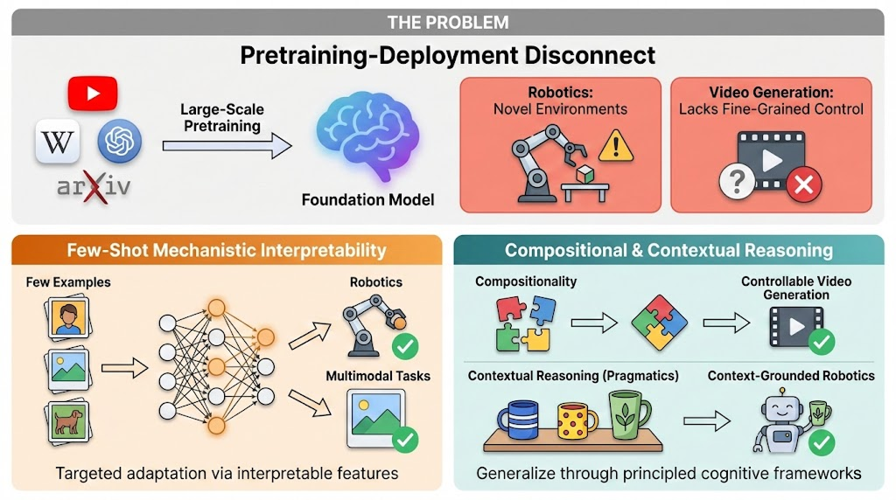

Chancharik Mitra
Masters in Machine Learning Student at Carnegie Mellon University
I develop AI systems that leverage pretrained knowledge to efficiently adapt to new tasks and environments, much like human reasoning under a "poverty of stimulus." My research focuses on few-shot adaptation via mechanistic interpretability and systematic generalization through compositional and pragmatic reasoning.
I am fortunate to be advised by Prof. Deva Ramanan (CMU) and have previously worked with Prof. Trevor Darrell (UC Berkeley) and Prof. Narges Norouzi (UC Berkeley). My work has been recognized with a NeurIPS D&B Spotlight and an IEEE MASS Best Workshop Paper Award.
📰 News

Few-Shot Mechanistic Interpretability (left): I develop methods that extract and steer task-relevant internal representations, enabling targeted adaptation from just a few examples—without expensive fine-tuning. This approach has proven effective for vision-language classification [Multimodal Task Vectors, NeurIPS '24; Sparse Attention Vectors, ICCV '25], reward modeling [Activation Reward Models, ACL '26], and robotic manipulation [Mechanistic VLA Finetuning, CVPR '26].
Compositional & Contextual Reasoning (right): I leverage cognitive and linguistic frameworks to achieve systematic generalization. For compositionality, I study how models can combine known primitives (like camera motions or visual concepts) to understand and generate novel combinations [Compositional CoT, CVPR '24; CameraBench, NeurIPS '25]. For pragmatic reasoning, I develop methods that use contextual cues for unambiguous grounding in embodied settings [Which One?, NAACL '24].
View full size